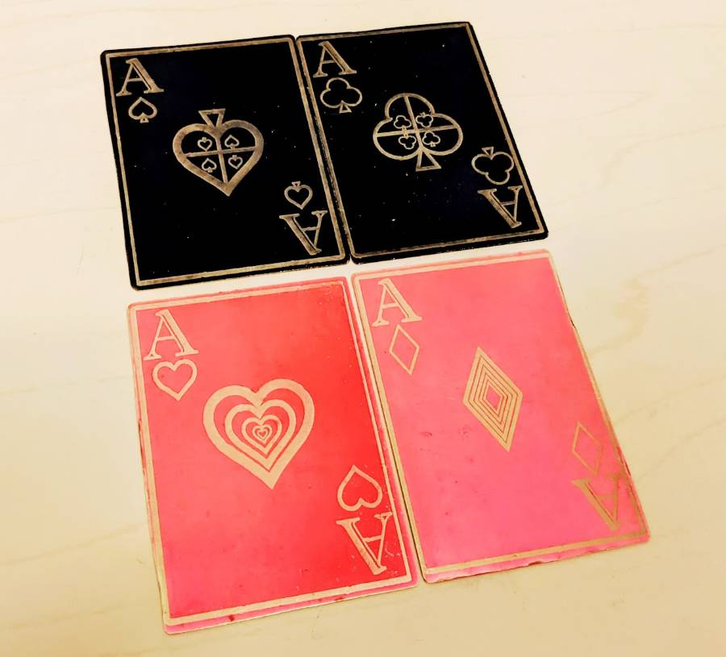

Lasers!
Laser equipment and materials are labeled RED!!!
Laser Cutter Orientations

The laser cutter orientation schedule can be found on the BTU Lab Calendar.
Anyone can gain access to the laser cutter using the steps below. Before that, schedule a time to do your laser cutting job with one of the Lazor Wizards on the BTU Mischief Makers page.
Equipment & Materials
- 75 Watt CO2 laser, 30" x 18" bed size (762mm x 457mm)
- 75 Watt CO2 laser, 40" x 28" bed size (1016mm x 711mm)
- Various plywood
- Various plastics
- Various cardboard / papers
- Various fabrics
How to Get Full Access to the Laser Cutters
- Complete the laser cutter orientation. See the BTU Lab Calendar.
- For class assignments, get help from LAs, TAs, and instructors first, then "Lazor Wizards" if available.
- As long as you need help, schedule laser appointments with a BTU Lazor Wizard.
- Lazor Wizards provide "guided access". We will help you as much, or as little, as needed.
- When you show you can use the laser cutter on your own the right way, you will have full access.
- Block 1-hour times on the whiteboard next to each laser. (Not during scheduled orientations.)